5. Creación de usuarios. Alumnos y Profesores
1.- CREACIÓN DE USUARIOS:
Cuando tengamos que crear nuevos usuarios lo realizaremos también desde el propio PiNet, esto nos permitirá que cada profesor y cada alumnado, tenga su configuración determinada. En principio los alumnos deberían poder acceder a sus terminales sin problemas de acceso y no tener un equipo para cada uno de ellos, sino que pueden utilizar el que deseen que guardará sus configuraciones.
Arrancamos PiNEt y vamos a Manage-Users
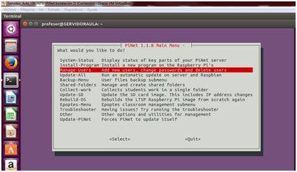
Nos aparecerá el siguiente menú:
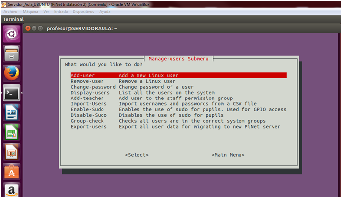
Que por orden nos permitirá:
Por orden:
*Añadir nuevos usuarios: Principalmente serán alumnos.
* Eliminar usuarios: Pues eso mismo
*Cambio de las contraseñas: Muy útil en caso de pérdida por parte de los alumnos.
*Listar usuarios: para ver todos los creados hasta ahora.
* Añadir Profesor: Aquí se nos permite añadir al grupo con más privilegios en el sistema, excepto el “root” del servidor a los usuarios creados mediante la primera opción.
* Importar usuarios: sencillo si tenemos algunos alumnos ya en un fichero .csv.
* Enable –Sudo // Disable – sudo: Permitir o denegar opciones de administrador de Raspbian a los alumnos. Puede ser beneficioso si queremos que los alumnos accedan al control de GPIO de sus Raspberry para realizar determinadas tareas o bien se instales sus propios programas.
* Chequeo de grupo: ver si están bien configurados.
* Exportar usuarios: Configura un .csv que permite guardar los usuarios para una migración hacia un nuevo PiNet.
2.- PRACTICAMOS:
Practicaremos creando un nuevo alumno en nuestro caso FranciscoJ.
Vamos al menú explicado anteriormente y pulsamos sobre Añadir nuevos usuarios.
Introducimos su nombre
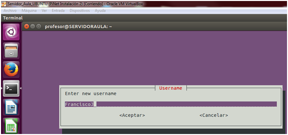
A la par ponemos una contraseña
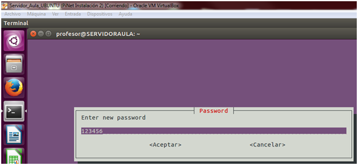
Lo señalamos ahora como pupilo (alumno) o profesor
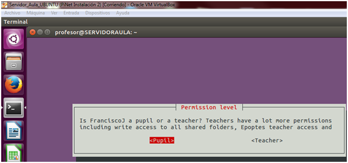
Ya lo tenemos creado
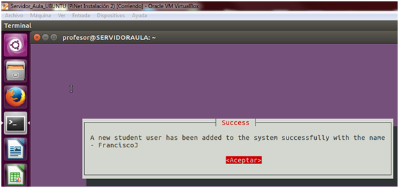
Nos preguntará si queremos añadir otro.
!!!!!Sencillo verdad¡¡¡¡¡¡ como más aprenderemos será llevándolo a la práctica así que debemos realizar la tarea encomendada para este módulo.
2.- CREACIÓN DE CARPETAS COMPARTIDAS:
Con PiNet arrancado, iremos a "Shared Folders"
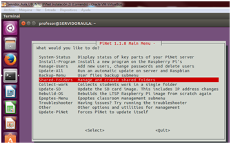
Leeremos el Menú:
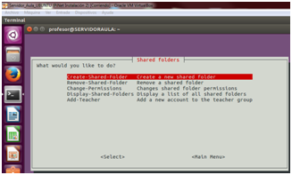
Vemos como podemos:
1.- Crear nuevas carpetas
2.- Borrar carpetas compartidas con anterioridad
3.- Cambiar los permisos; Dar lectura-escritura a los alumnos, solo lectura...
4.- Ver las carpetas compartidas en la actualidad.
5.- Añadir un profesor al grupo de profesores (necesario para compartir).
Elegimos la primera de las opciones y nos avisará que estas carpetas estarán accesibles desde todas las Raspberrys Pi; Marcamos que sí e introducimos el nombre de la carpeta compartida (sin espacios)
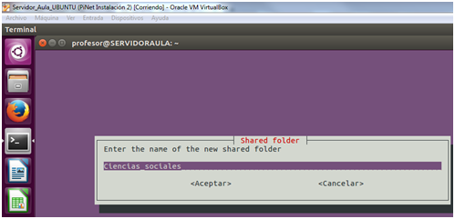
Otorgamos permisos a los alumnos, recomiendo leer y escribir, para que también puedan compartir recursos con el profesorado, pero también puede ser buena opción la primera para compartir apuntes, tareas, etc y que no puedan ser eliminados. En definitiva, deberemos adaptar los permisos a nuestros usos particulares de los recursos compartidos.
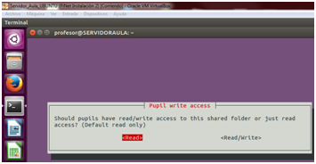
Nos mostrará la ruta al recurso y nos avisa que deberemos reiniciar los terminales para que todos los usuarios las vean.
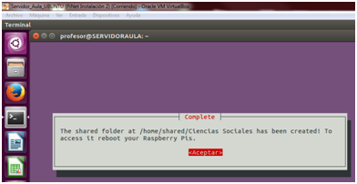
Muestro como verá el alumno el recurso compartido que le aprecera directamente en sus carpetas
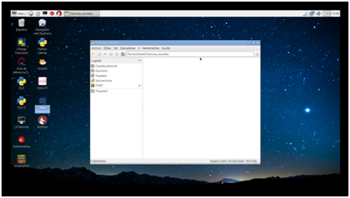
Mientras que el profesor lo verá así.
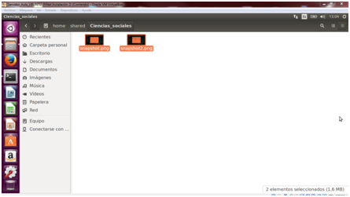
Os animo a que practiqueis esta parte del curso, comprobando si podemos mediante grupos de usuarios, tener acceso a unos recursos compartidos y no a otros, consiguiendo con ello evitar los problemas de "me han borrado mi trabajo" que todos hemos sufrido alguna vez.
*/ TODAS LAS IMÁGENES UTILIZADAS EN EL PRESENTE MÓDULO HAN SIDO ELABORADAS POR EL AUTOR DEL CURSO.

Monta tu aula de informática con Raspberry Pi por Fernando Gasca Andreu bajo licencia Creative Commons Reconocimiento-NoComercial-CompartirIgual 4.0 Internacional License.